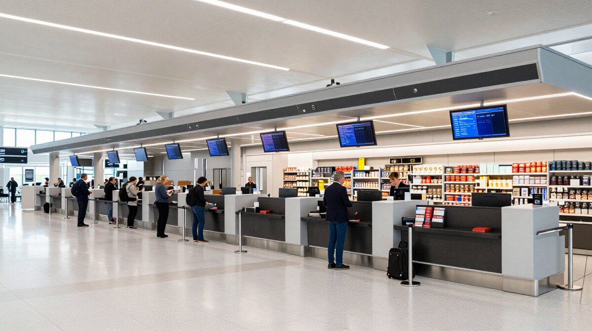

在全球航空業的年度盛事——Skytrax World Airport Awards 2025頒獎典禮上， 開普敦國際機場（Cape Town International Airport, CPT）一舉拿下兩項重量級殊榮： 「非洲最佳機場」（Africa's Best Airport）以及 「非洲最佳機場服務」（Best Airport Staff Service in Africa）。 這不僅是對開普敦機場服務品質的最高肯定，更向全球投資者發出了一個清晰訊號： 南非的基礎建設與國際競爭力正在穩步提升，置產投資的黃金窗口已經開啟。
World Airport Awards：機場界的奧斯卡
World Airport Awards 是由英國知名航空服務調查公司 Skytrax 舉辦的全球機場評選活動，自1999年開始每年舉辦，被譽為「機場界的奧斯卡」。 不同於其他由業內專家或媒體評選的獎項，World Airport Awards 的評選基礎是全球旅客的真實體驗與滿意度調查。
根據 Skytrax 官方資料， 2025年的調查涵蓋了全球超過575座機場，參與問卷的旅客來自100多個國籍， 調查時間長達數個月，評估指標包括機場通關效率、設施舒適度、餐飲選擇、購物體驗、員工服務態度等多達數十個面向。 能夠在這樣嚴謹的評選中脫穎而出，充分證明了開普敦機場的國際水準。
「World Airport Awards 是全球機場業最具公信力的評比之一，因為它直接反映數百萬旅客的真實體驗。」— Skytrax 執行長 Edward Plaisted
開普敦機場的優勢：為何能成為非洲第一？
開普敦國際機場不僅是南非的門面，更是整個非洲南部的航空樞紐。 根據 ACSA 官方數據， 該機場2024年旅客吞吐量達到1,140萬人次，服務超過30家國際航空公司， 連接全球超過50個目的地。但數字背後，是開普敦機場在多個維度的卓越表現：
1. 現代化設施與設計
開普敦機場的國際航廈於2009年啟用，由知名建築師事務所設計，融合現代建築美學與非洲文化元素。 大面積的玻璃帷幕牆讓自然光灑滿整個航廈，旅客在候機時可以遠眺桌山（Table Mountain）的壯麗景色。 航廈內設有超過50家免稅商店、30多間餐廳，以及完善的商務貴賓室設施。

2. 卓越的服務品質
此次獲得的「非洲最佳機場服務」獎項，是對開普敦機場員工專業素養的高度肯定。 從報到櫃檯的地勤人員、安檢區域的保安人員，到貴賓室的服務團隊，開普敦機場的員工以友善、 專業和效率著稱。在多語言服務方面，機場員工能夠流利使用英語、南非荷蘭語、 以及基本的法語、德語和中文，滿足全球旅客的需求。
3. 高效的通關流程
對於國際旅客而言，通關效率是評價機場的重要指標。開普敦機場在這方面表現優異， 平均入境通關時間控制在30分鐘以內，出境安檢流程順暢。 機場還積極導入生物識別技術和自動化設備，進一步提升通關效率。
4. 無縫的交通連接
開普敦機場距離市中心僅約20公里，車程約20-30分鐘。 機場提供多種交通選擇，包括 MyCiTi 快速公交、計程車、租車服務以及預約專車。 這種便捷的交通連接，讓商務旅客和觀光客都能輕鬆往返機場與市區。
與其他非洲機場的比較：開普敦的獨特優勢
非洲大陸擁有眾多國際機場，包括約翰尼斯堡的奧利弗·坦博國際機場（JNB）、 卡薩布蘭卡的穆罕默德五世國際機場（CMN）、開羅國際機場（CAI）等。 開普敦機場能夠在這些強勁對手中脫穎而出，成為「非洲最佳機場」， 關鍵在於其獨特的綜合優勢：
開普敦機場 vs. 其他非洲主要機場
✓ 安全性優勢
相較於約翰尼斯堡機場，開普敦周邊區域的治安狀況更佳，對國際旅客更具吸引力。
✓ 自然景觀
機場周邊擁有桌山、好望角等世界級自然景觀，這是其他非洲機場無法比擬的獨特資產。
✓ 國際連接
直飛歐洲、中東、亞洲的航線密集，商務和觀光旅客的首選門戶。
✓ 設施現代化
航廈於2009年全面翻新，設施遠比許多非洲老牌機場更現代化。
獲獎對南非置產投資的影響
對於房地產投資者而言，開普敦機場獲獎絕不只是新聞頭條，而是一個重要的投資訊號。 機場的國際聲譽提升，將從多個層面影響周邊房地產市場：
1. 國際旅客與商務需求增加
World Airport Awards 的殊榮將進一步提升開普敦的國際知名度，吸引更多商務旅客和國際會議選擇開普敦作為目的地。 根據 Invest Cape Town 的分析，機場獲獎後的2-3年內，國際商務旅客人數通常會增長10-15%。 這將直接帶動機場周邊的商務公寓和服務式住宅需求。
2. 企業進駐與就業增長
優質的機場基礎建設是跨國企業選擇設立區域總部的重要因素。開普敦機場的國際認可， 將吸引更多國際企業進駐，進而創造高薪就業機會。這些專業人士將成為周邊高端住宅的穩定租戶群。
3. 旅遊地產的增值潛力
開普敦本就是全球熱門的旅遊目的地，機場獲獎將進一步強化這一形象。 對於投資短租市場的投資者而言，這意味著更高的入住率和租金收益。 尤其是機場周邊15-30分鐘車程範圍內的物業，將成為遊客的首選住宿區域。
「機場是城市的門面，優質的機場服務能夠顯著提升城市的國際形象，進而帶動房地產市場的活躍。」— 國際機場協會（ACI）研究報告
未來發展：機場升級計劃與投資機遇
獲獎只是開始，開普敦機場的未來更加令人期待。南非機場公司（ACSA）已宣佈投入超過 100億南非幣進行機場升級計劃，目標是在2030年前將年旅客處理能力從目前的1,400萬提升至2,000萬。 這項升級計劃包括航廈擴建、跑道延長、智慧機場建設等，將進一步提升開普敦機場的競爭力。
對於投資者而言，這代表著2026-2030年是進場的黃金窗口期。 隨著機場升級計劃的推進，周邊的 Somerset West、Stellenbosch、Bellville 等區域， 預計將迎來顯著的房價漲幅和租金收益增長。歷史數據顯示， 類似規模的機場升級項目，通常會在3-5年內帶動周邊房價上漲10-25%。
為什麼選擇鼎曜國際顧問？
作為 Crestline Advisory 亞太區獨家數位行銷中心，鼎曜國際顧問專注於協助台灣高資產族群佈局南非。 面對開普敦機場獲獎帶來的投資機遇，我們的優勢在於：
- 1 在地戰略夥伴：與Crestline Advisory深度合作，掌握開普敦機場周邊第一手投資機會，精選Somerset West、Stellenbosch等高潛力區域的優質標的
- 2 數位資產平台：獨家Client Portal系統，讓您在台灣也能即時監控海外資產狀況，掌握機場升級帶來的價值增長
- 3 資金安全保障：投資款存入Standard Bank個人專屬帳戶，符合FICA法規，資金絕對安全，全程透明可追溯
- 4 專業市場洞察：深入分析機場獲獎與基礎建設升級對房地產市場的影響，為您制定最優投資策略
目前，我們精選的 Durbanville 頂級莊園、 Stellenbosch 歷史名宅、 Constantia 奢華綠帶 等項目， 正好位於開普敦機場的價值輻射範圍內。隨著機場國際聲譽的提升和升級計劃的推進， 這些區域的投資價值將持續攀升。
常見問題 FAQ
參考資料與數據來源
Leo Pan - 潘品樺
鼎曜國際顧問 創辦人
專注於南非置產、教育留學、退休生活與身分規劃，協助客戶在南非建立理想的資產組合與生活方案。 擁有超過10年跨境投資顧問經驗，致力於以科技驅動透明度，讓台灣投資人在世界的另一端也能如同親臨般掌控財富與未來。